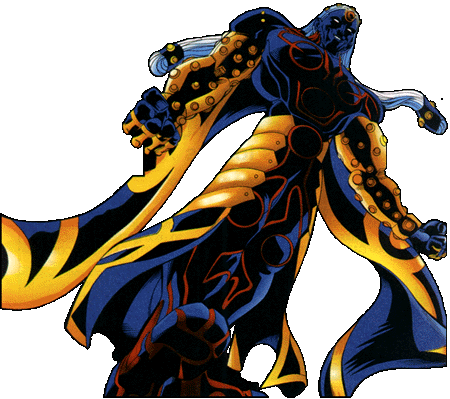

Fredd
Fredd is the evil twin, clone, future self from another dimension. You just know that Fredd is evil because of the way his name is spelled with two "d's". Well that and the fact that he fought his Earth's Avengers and Fantastic Four together while single-handedly destroying the planet in a bid to take the whole place over. Fredd demonstrates just how dangerous Captain Marvel's powers can be when left to one with evil intentions.